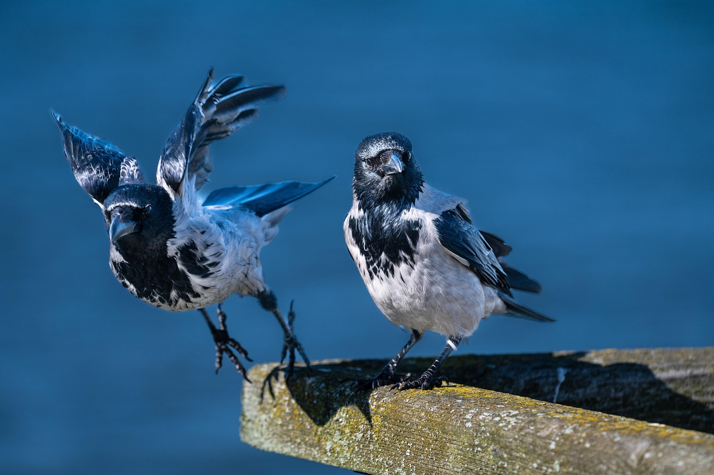
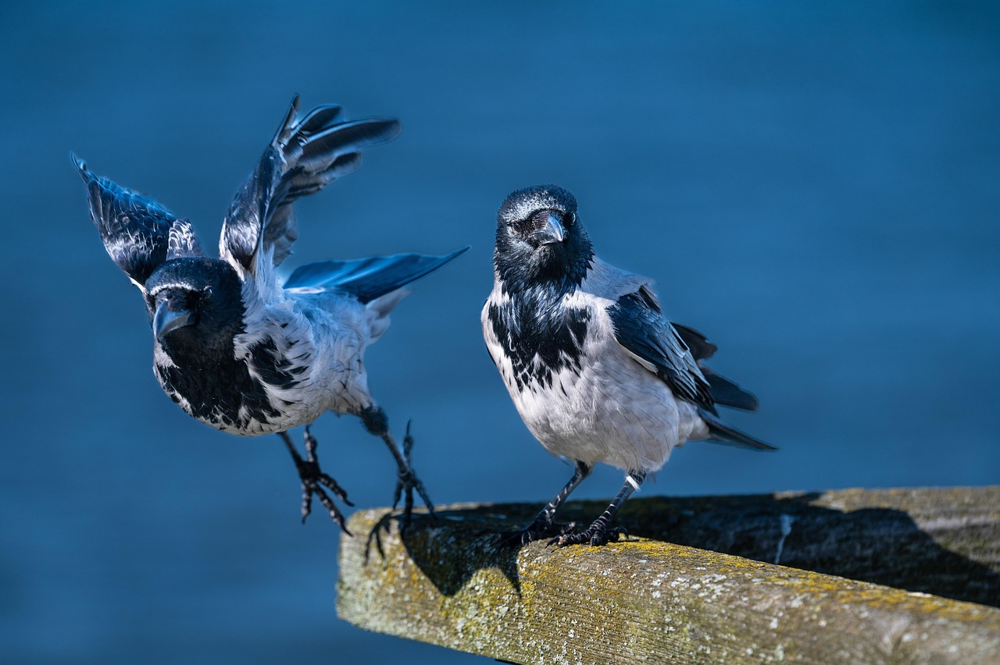
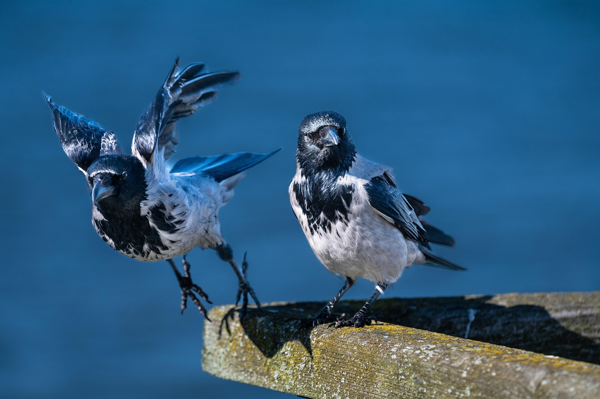

Selected works :
 

I’m a lifestyle and travel photographer, always chasing light and emotion. My work blends candid moments with artistic vision to create lasting memories.
Download CV

A skilled photographer typically possesses a combination of technical, creative, and interpersonal skills.
A toy camera is a simple, inexpensive film or digital camera made with low-quality plastic components, including the lens.

A toy camera is a simple, inexpensive film or digital camera made with low-quality plastic components, including the lens.
Have a project in mind or just want to say hello? I’d love to hear from you.
Instagram : @bavi_photography
LinkedIn : @bavi_photography